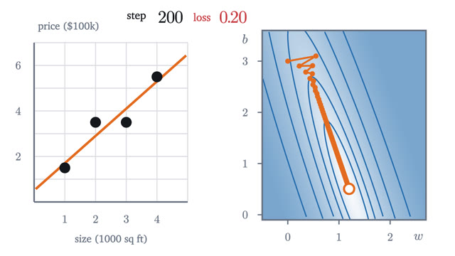
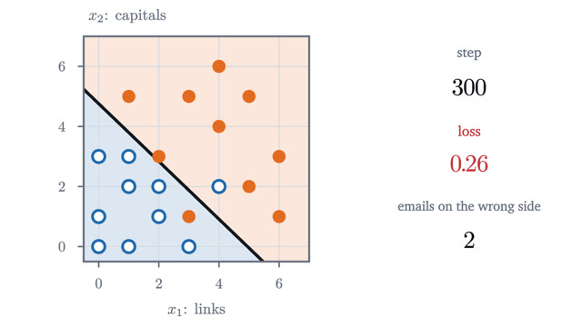
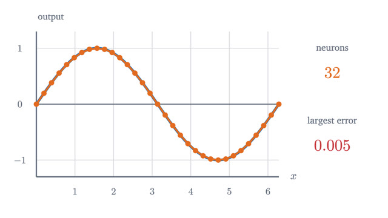
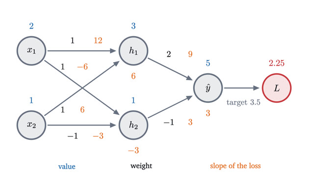
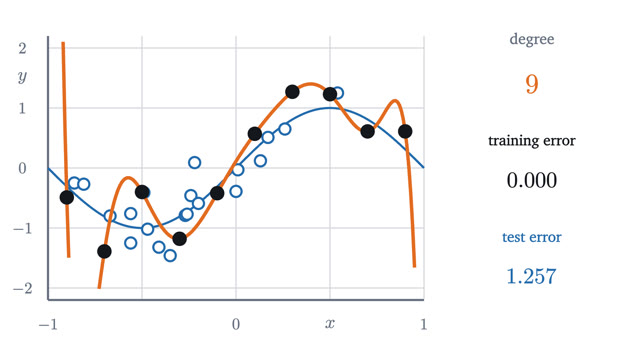
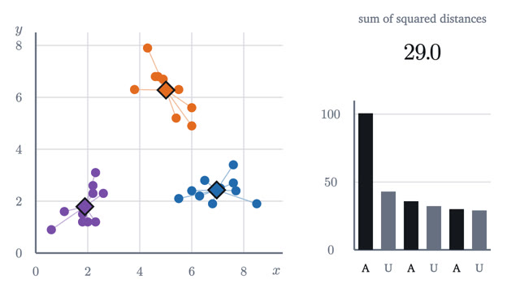

Machine Learning
How a model learns: fitting, gradient descent and neural networks.
The series builds a neural network from the smallest case. Fitting a line defines what learning means, and gradient descent is the method that does the fitting. Logistic regression turns the same idea to yes-or-no questions, a neural network stacks it, and backpropagation makes it trainable. The last two lessons cover what goes wrong and how to learn without labels.
Start with lesson 1-
1
What "learning" means: fitting a line to dataA model is a formula with adjustable numbers, a loss scores its misses, and training lowers the loss. All three, worked by hand on four house prices.

-
2
Gradient descent: learning by walking downhillDerive the gradient descent update from the tangent line, prove exactly which learning rates converge on a parabola, and watch it train a line on real data.

-
3
Classification: drawing a line between yes and noLogistic regression from the ground up: the sigmoid from log-odds, cross-entropy from maximum likelihood, the gradient derived in full, and why XOR defeats it.

-
4
What a neural network computesA neuron is a linear score followed by a bend. Sums of bends build bumps, bumps build any curve, and two neurons solve XOR. All with explicit weights.

-
5
Backpropagation: the chain rule, organizedRun a tiny network forward with real numbers, get every weight's slope in one backward pass, prove the delta recursion, and check it by nudging each weight.

-
6
Overfitting: when a model memorizes instead of learningFit polynomials of degree 1, 3 and 9 to ten noisy points, watch training and test error part ways, and derive the bias-variance decomposition.

-
7
k-means: finding groups nobody labeledScore a grouping by its sum of squared distances, lower it with Lloyd's two alternating steps, prove the algorithm must stop, and see where it goes wrong.
